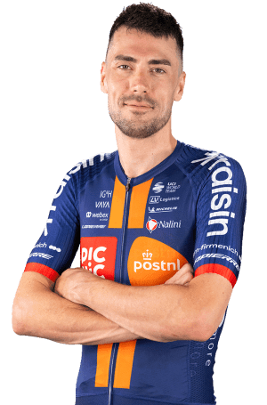

| Nombre del dato | Resultado |
|---|---|
| Equipo | Team Picnic PostNL |
| Carreras disputadas | 27 (19 de un día y 8 por etapas) |
| Días de competición | 81 |
| Kilómetros recorridos | 12.989,2 km |
| Victorias | 0 |
| Podios | 0 |
| Abandonos | 8 |
| Clasificación general en La Vuelta 2025 | 137º |
| Clasificación por puntos en La Vuelta 2025 | 67º |
| Mejor clasificación general | 52º en el NIBC Tour of Holland |
| Maillots especiales conseguidos | Ninguno |